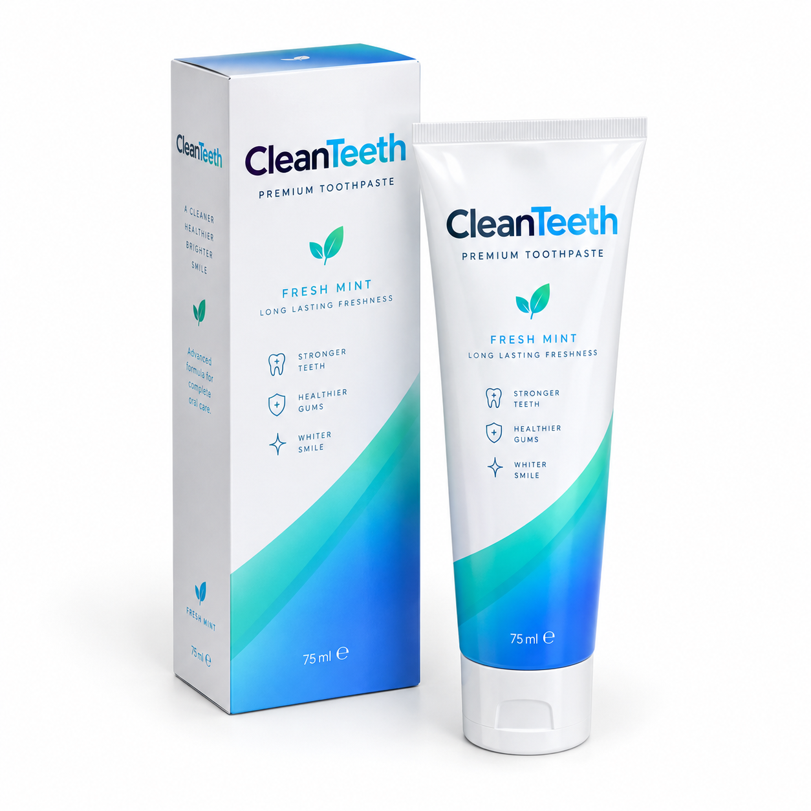

Bienvenidos a la web oficial de Clean Teeth, tu marca de pasta de dientes de lujo para el cuidado diario.
Clean Teeth es una marca de pasta de dientes de lujo pensada para quienes cuidan su sonrisa cada día. Su fórmula avanzada te deja unos dientes más fuertes, unas encías más sanas, una sonrisa más blanca, y una protección avanzada en tus dientes.
Me encantan los productos de cuidado personal, y por eso he creado esta web. Tener los dientes siempre limpios es una forma sencilla de sentirse bien, cuidar tus dientes y de empezar el día con frescura, por eso recomiendo al 100% Clean Teeth.

Contamos con tres variedades exclusivas en formato de 75 ml adaptadas a cada necesidad:
Todas nuestras pastas están elaboradas con ingredientes seleccionados de sabor menta para proteger el esmalte.